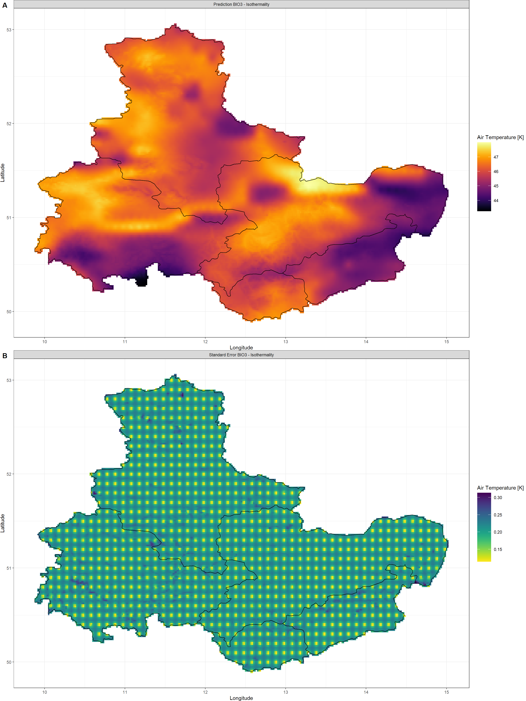
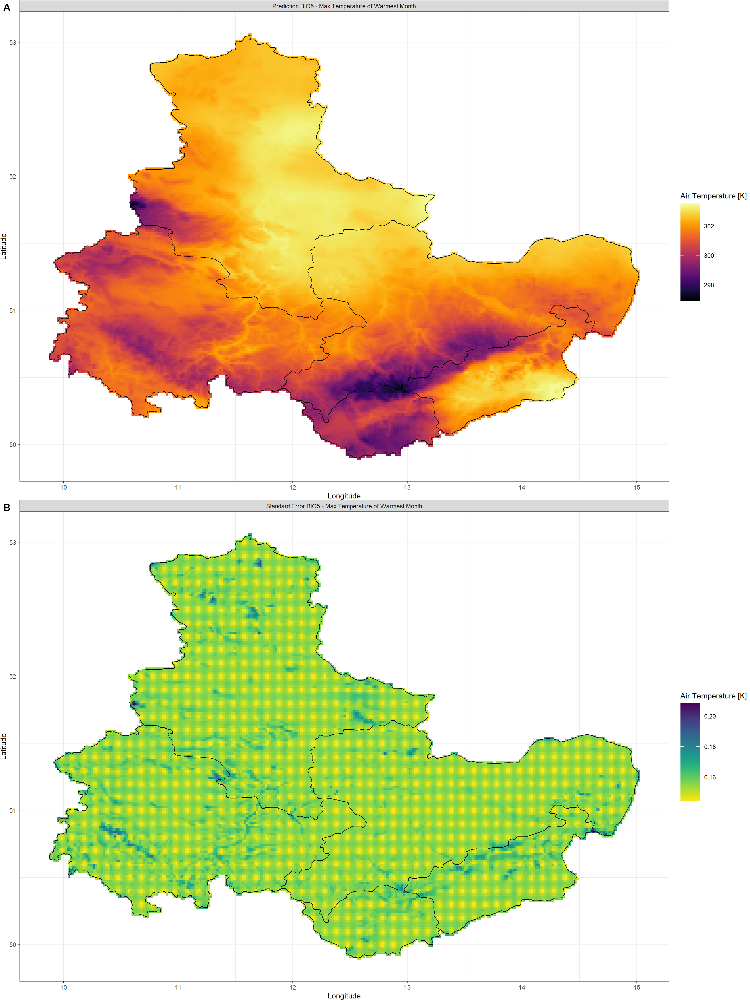
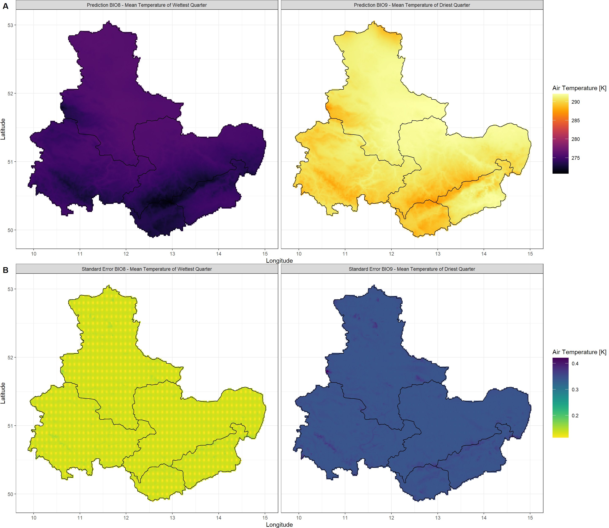

Bioclimatic Variables
KrigR is currently undergoing development. As a result, this part of the workshop has become deprecated. Please refer to the setup quick guide portions of this material as these are up-to-date.
For bioclimatic variable calculation, this workshop makes use of the SpatialPolygons spatial preferences which we set up
here.
First, we load KrigR:
library(KrigR)
KrigR we want to use the BioClim() function.
In the next sections, I will show you how to use it and how the resulting data objects may differ and why.
Our First Bioclimatic Data Set
Let’s start with the most basic of bioclimatic data products. So what are the specifications? Well, we:
- Query data for the period between 2010 (
Y_start) and 2020 (Y_end, including 2020). - Obtain data from the era5-land (
DataSet) catalogue of data. - Approximate water availability through precipitation (
Water_Var) in keeping with typical practices. - Extreme metrics for temperature minimum and maximum are calculated from daily (
T_res) aggregates of the underlying hourly temperature data.
BioClim() wrapped in if statements which check for whether the output is already present or not. BioClim compilation can take significant time and I do this here to avoid recompilation on changes to the text of the blogpost on my end.
Keep_Monthly = TRUE will prompt the function to retain monthly aggregates of temperature and water availability alongside the final output. When BioClim() recognises that any of the underlying data is already present, it will skip the steps necessary to create this data.
Click here for file if download & processing takes too long:
Download Present_BC.nc and place it into your data directory.if(!file.exists(file.path(Dir.Data, "Present_BC.nc"))){
BC2010_ras <- BioClim(
Water_Var = "total_precipitation",
Y_start = 2010,
Y_end = 2020,
DataSet = "era5-land",
T_res = "day",
Extent = Shape_shp,
Dir = Dir.Data,
Keep_Monthly = FALSE,
FileName = "Present_BC",
API_User = API_User,
API_Key = API_Key,
Cores = numberOfCores,
TimeOut = 60^2*48,
SingularDL = TRUE,
verbose = TRUE,
Keep_Raw = FALSE,
TryDown = 5
)
}else{
BC2010_ras <- stack(file.path(Dir.Data, "Present_BC.nc"))
}
Now let’s plot our results. Note that temperature is recorded in Kelvin and precipitation in cubic metres (i.e. litres). To do so, we use one of our user-defined plotting functions:
Plot_BC(BC2010_ras, Shp = Shape_shp)
There’s not much commenting on the output above as the output should look familiar to most macroecologists.
Time-Frames
KrigR, you can build the bioclimatic data sets you need for your study.
Let’s move on to the first important functionality of the KrigR::BioClim() function: selection of time-frames. With this, you can obtain bioclimatic data for exactly the duration that your study requires. Here, we query data for the period between 1951 and 1960:
Click here for file if download & processing takes too long:
Download Past_BC.nc and place it into your data directory.if(!file.exists(file.path(Dir.Data, "Past_BC.nc"))){
BC1951_ras <- BioClim(
Water_Var = "total_precipitation",
Y_start = 1951,
Y_end = 1960,
DataSet = "era5-land",
T_res = "day",
Extent = Shape_shp,
Dir = Dir.Data,
Keep_Monthly = FALSE,
FileName = "Past_BC",
API_User = API_User,
API_Key = API_Key,
Cores = numberOfCores,
TimeOut = 60^2*48,
SingularDL = TRUE,
verbose = TRUE
)
}else{
BC1951_ras <- stack(file.path(Dir.Data, "Past_BC.nc"))
}
I will forego plotting the data itself and instead plot the difference between our bioclimatic data of the present which we created prior and the newly created bioclimatic product of the past. Let me walk you through them 1 by 1.
Annual Temperature
As you can see below, the time period of 2010 to 2020 was about 1.5-1.9 Kelvin warmer than the period of 1951 to 1960:
Plot_BC(BC2010_ras-BC1951_ras, Shp = Shape_shp, which = 1)

Temperatures
Let’s bundle the differences for all remaining temperature-related bioclimatic variables:
Plot_BC(BC2010_ras-BC1951_ras, Shp = Shape_shp, which = 2:11)
Again, you should easily identify just how much the data changes when setting different calculation time frames for bioclimatic variables.
Water Availability
Now for the water-related bioclimatic variables:
Plot_BC(BC2010_ras-BC1951_ras, Shp = Shape_shp, which = 12:19)
Clearly, my home area turned much drier with more pronounced seasonality and extreme precipitation events.
I hope that the above has clearly demonstrated on thing:
Water-Availability Variables
KrigR, you can decide which water availability variable from the ERA5(-Land) catalogue to use for calculation of bioclimatic data sets.
Contrary to current practices in macroecology, I have gripes with the use of precipitation data in bioclimatic variable computation. Why is that? I strongly believe that other water availability variables are much better suited for our analyses for two reasons:
- Bioclimatic products are usually derived from observation-based climate products (such as WorldClim) which do not do a terrific job at accurately representing precipitation to begin with.
- Further downscaling of bioclimatic products containing precipitation information is terribly difficult.
Both issues are related to one central problem: Statistical interpolation of precipitation data is difficult and usually done insufficiently.
Luckily, with ERA5(-Land), we aren’t tied to precipitation and can instead use other water availability metrics such as volumetric soil water content - also known as soil moisture. What’s more, this data is available in four distinct depth layers which can be linked to root depth and growth forms.
Here, I demonstrate the use of the shallowest layer of soil moisture data. As you can see, we are using the same specification as for our basic bioclimatic product with the exception for the Water_Var argument:
Click here for file if download & processing takes too long:
Download Qsoil_BC.nc and place it into your data directory.if(file.exists(file.path(Dir.Data, "Qsoil_BC.nc"))){
BCq_ras <- stack(file.path(Dir.Data, "Qsoil_BC.nc"))
}else{
BCq_ras <- BioClim(
Water_Var = "volumetric_soil_water_layer_1",
Y_start = 2010,
Y_end = 2020,
Extent = Shape_shp,
Dir = Dir.Data,
Keep_Monthly = FALSE,
FileName = "Qsoil_BC",
API_User = API_User,
API_Key = API_Key,
Cores = numberOfCores,
TimeOut = Inf,
SingularDL = TRUE
)
}
That’s how easy it is to obtain different bioclimatic products with KrigR. Let’s plot this:
Plot_BC(BCq_ras, Shp = Shape_shp, Water_Var = "Soil Moisture")
Again, I would like to investigate the changes in how we understand the climatic regimes across our study area now that we are using soil moisture for our water availability as compared to when we used precipitation data.
Temperatures
As is hardly surprising, there are no differences in annual temperature data or any other temperature variable except for BIO8 and BIO9. Since we change by what we quantify dryness and wetness, there is tremendous potential in quantifying temperature of driest and wettest quarter differently:
Plot_BC(BC2010_ras-BCq_ras, Shp = Shape_shp, which = 8:9)
Water Availability
Now for the water-related bioclimatic variables. This is where the rubber meets the road! Aside from the quantitative differences in water availability estimates when using soil moisture over precipitation records, please take note of the much more pronounced spatial patterns (particularly along the river throughout Saxony-Anhalt in the north-western region of our study area) when using soil moisture data. This is much more likely to accurately represent bioclimatic envelopes than the smooth patterns you can see for precipitation records.
Plot_BC(BC2010_ras-BCq_ras, Shp = Shape_shp, which = 12:19)
I hope that the above has clearly demonstrated on thing:
Extreme Value Calculations
Lastly, let us concern ourselves with the retrieval of extreme climate metrics which will affect almost all of our temperature-reliant bioclimatic variables.
KrigR, you can decide how to calculate extreme metrics.
So far, we have calculated monthly minimum and maximum temperatures from daily aggregates. However, with KrigR::BioClim() we can also obtain these extremes from hourly records simply by changing T_res:
Click here for file if download & processing takes too long:
Download Hourly_BC.nc and place it into your data directory.if(file.exists(file.path(Dir.Data, "Hourly_BC.nc"))){
BCh_ras <- stack(file.path(Dir.Data, "Hourly_BC.nc"))
}else{
BCh_ras <- BioClim(
Water_Var = "volumetric_soil_water_layer_1",
Y_start = 2010,
Y_end = 2020,
T_res = "hour",
Extent = Shape_shp,
Dir = Dir.Data,
Keep_Monthly = FALSE,
FileName = "Hourly_BC",
API_User = API_User,
API_Key = API_Key,
Cores = numberOfCores,
TimeOut = Inf,
SingularDL = TRUE
)
}
Once again, let me plot the outcome of this.
Annual Temperature
The differences in annual temperature are negligible and only arise through slight deviations in hourly aggregates to monthly aggregates and daily aggregates.
Click here for the plot
Plot_BC(BCq_ras - BCh_ras, Shp = Shape_shp, Water_Var = "Soil Moisture", which = 1)
Temperatures
Let’s bundle the differences for all remaining temperature-related bioclimatic variables.
You will immediately see that all metrics reliant of mean values such as BIO4 and BIO8-BIO11 remain almost completely unaltered when using hourly aggregates. The stark differences manifest in all temperature-extreme variables:
Plot_BC(BCq_ras - BCh_ras, Shp = Shape_shp, Water_Var = "Soil Moisture", which = 2:11)
Water Availability
Unsurprisingly, there are no changes to our quantification of water availability metrics. You may plot this for yourself if you are interested.
I hope that the above has clearly demonstrated on thing:
Kriging Bioclimatic Products
You might be unhappy with the spatial resolution of the bioclimatic data products generated through KrigR::BioClim(). You can remedy this through statistical interpolation which is conveniently built into KrigR.
When you do so, you do it at your own risk as I can not guarantee that the results will always be sensible. Investigate them before using them. It would be wiser to downscale the underlying data rather than the finished product, but I don’t feel like spending days on end kriging the underlying data so instead I show you how kriging can be performed, but I do so for the entire product.
Since I mentioned earlier that statistical interpolation of precipitation data is fraught with errors, I am demonstrating how to downscale the soil moisture product (BCq_ras). We have demonstrated capability of downscaling soil moisture data reliably using Kriging in this
this publication (Figure 3).
Temperatures
Here, we follow the same basic kriging steps as demonstrated previously in this workshop material.
First, we create our DEM covariate rasters:
Covs_ls <- download_DEM(Train_ras = BCq_ras,
Target_res = .02,
Shape = Shape_shp,
Dir = Dir.Covariates,
Keep_Temporary = TRUE)
Next, we carry out the interpolation. A few things of note here: (1) I only hand the first 11 layers to the kriging call because those are the temperature data, (2) I leave out the Cores argument, so that krigR() determines how many cores your machine has and uses all of them to speed up the computation of the multi-layer raster, and (3) I set nmax to 80 to approximate a typical weather system in size:
BC_Temperature_Krig <- krigR(Data = BCq_ras[[1:11]],
Covariates_coarse = Covs_ls[[1]],
Covariates_fine = Covs_ls[[2]],
Keep_Temporary = FALSE,
nmax = 80,
FileName = "BC_Temperature_Krig",
Dir = Dir.Exports
)
## Commencing Kriging
##
|
| | 0%
|
|======= | 9%
|
|=============== | 18%
|
|====================== | 27%
|
|============================= | 36%
|
|==================================== | 45%
|
|============================================ | 55%
|
|=================================================== | 64%
|
|========================================================== | 73%
|
|================================================================= | 82%
|
|========================================================================= | 91%
|
|================================================================================| 100%
## Warning: [writeCDF] for better results use file extension '.nc' or '.cdf'
## see: https://stackoverflow.com/a/65398262/635245
## Warning: [rast] unknown extent
## Warning: [writeCDF] for better results use file extension '.nc' or '.cdf'
## see: https://stackoverflow.com/a/65398262/635245
## Warning: [rast] unknown extent
Finally, we analyse the outputs of our plotting exercise. I break these up into smaller chunks for easier digestion.
BIO1 - Annual Mean Temperature
Click here for plotting call and plot:
Plot_Krigs(lapply(BC_Temperature_Krig[-3], "[[", 1),
Shp = Shape_shp,
Dates = "BIO1 - Annual Mean Temperature"
)
BIO2 - Mean Diurnal Range
Click here for plotting call and plot:
krigr() on the final bioclimatic product.
Plot_Krigs(lapply(BC_Temperature_Krig[-3], "[[", 2),
Shp = Shape_shp,
Dates = "BIO2 - Mean Diurnal Range"
)

BIO3 - Isothermality
Click here for plotting call and plot:
krigr() on the final bioclimatic product.
Plot_Krigs(lapply(BC_Temperature_Krig[-3], "[[", 3),
Shp = Shape_shp,
Dates = "BIO3 - Isothermality"
)

BIO4 - Temperature Seasonality
Click here for plotting call and plot:
krigr() on the final bioclimatic product.
Plot_Krigs(lapply(BC_Temperature_Krig[-3], "[[", 4),
Shp = Shape_shp,
Dates = "BIO4 - Temperature Seasonality"
)
BIO5 - Max Temperature of Warmest Month
Click here for plotting call and plot:
Plot_Krigs(lapply(BC_Temperature_Krig[-3], "[[", 5),
Shp = Shape_shp,
Dates = c("BIO5 - Max Temperature of Warmest Month")
)

BIO6 - Min Temperature of Coldest Month
Click here for plotting call and plot:
Plot_Krigs(lapply(BC_Temperature_Krig[-3], "[[", 6),
Shp = Shape_shp,
Dates = "BIO6 - Min Temperature of Coldest Month"
)
BIO7 - Temperature Annual Range (BIO5-BIO6)
Click here for plotting call and plot:
krigr() on the final bioclimatic product.
Plot_Krigs(lapply(BC_Temperature_Krig[-3], "[[", 7),
Shp = Shape_shp,
Dates = "BIO7 - Temperature Annual Range (BIO5-BIO6)"
)
Click here for calculation, plotting call, and plot:
Here, I visualise the differences between the interpolated BIO7 and the recalculated BIO7 (from interpolated BIO5 and BIO6):
BIO7 <- lapply(BC_Temperature_Krig[1], "[[", 5)[[1]] - lapply(BC_Temperature_Krig[1], "[[", 6)[[1]]
Plot_Raw(lapply(BC_Temperature_Krig[1], "[[", 7)[[1]]-BIO7,
Shp = Shape_shp,
Dates = "BIO7 - Temperature Annual Range (BIO5-BIO6)"
)
To be fair, these differences are rather small when compared to the data range in BIO7.
BIO8 & BIO9 - Temperatures of Wettest and Driest Quarter
Click here for plotting call and plot:
Plot_Krigs(lapply(BC_Temperature_Krig[-3], "[[", 8:9),
Shp = Shape_shp,
Dates = c("BIO8 - Mean Temperature of Wettest Quarter",
"BIO9 - Mean Temperature of Driest Quarter")
)

BIO10 & BIO11 - Temperatures of Warmest and Coldest Quarter
Click here for plotting call and plot:
Plot_Krigs(lapply(BC_Temperature_Krig[-3], "[[", 10:11),
Shp = Shape_shp,
Dates = c("BIO10 - Mean Temperature of Warmest Quarter",
"BIO11 - Mean Temperature of Coldest Quarter")
)
Water Availability
KrigR, you can use different sets of covariates. I demonstrate this in the workshop material regarding third-party covariates.
Session Info
sessionInfo()
## R version 4.2.3 (2023-03-15)
## Platform: x86_64-apple-darwin17.0 (64-bit)
## Running under: macOS Big Sur ... 10.16
##
## Matrix products: default
## BLAS: /Library/Frameworks/R.framework/Versions/4.2/Resources/lib/libRblas.0.dylib
## LAPACK: /Library/Frameworks/R.framework/Versions/4.2/Resources/lib/libRlapack.dylib
##
## locale:
## [1] en_US.UTF-8/en_US.UTF-8/en_US.UTF-8/C/en_US.UTF-8/en_US.UTF-8
##
## attached base packages:
## [1] parallel stats graphics grDevices utils datasets methods base
##
## other attached packages:
## [1] mapview_2.11.0 rnaturalearthdata_0.1.0 rnaturalearth_0.3.2
## [4] gimms_1.2.1 ggmap_3.0.2 cowplot_1.1.1
## [7] viridis_0.6.2 viridisLite_0.4.1 ggplot2_3.4.1
## [10] tidyr_1.3.0 KrigR_0.1.2 terra_1.7-21
## [13] httr_1.4.5 stars_0.6-0 abind_1.4-5
## [16] fasterize_1.0.4 sf_1.0-12 lubridate_1.9.2
## [19] automap_1.1-9 doSNOW_1.0.20 snow_0.4-4
## [22] doParallel_1.0.17 iterators_1.0.14 foreach_1.5.2
## [25] rgdal_1.6-5 raster_3.6-20 sp_1.6-0
## [28] stringr_1.5.0 keyring_1.3.1 ecmwfr_1.5.0
## [31] ncdf4_1.21
##
## loaded via a namespace (and not attached):
## [1] leafem_0.2.0 colorspace_2.1-0 class_7.3-21
## [4] leaflet_2.1.2 satellite_1.0.4 base64enc_0.1-3
## [7] rstudioapi_0.14 proxy_0.4-27 farver_2.1.1
## [10] fansi_1.0.4 codetools_0.2-19 cachem_1.0.7
## [13] knitr_1.42 jsonlite_1.8.4 png_0.1-8
## [16] Kendall_2.2.1 compiler_4.2.3 assertthat_0.2.1
## [19] fastmap_1.1.1 cli_3.6.0 htmltools_0.5.4
## [22] tools_4.2.3 gtable_0.3.1 glue_1.6.2
## [25] dplyr_1.1.0 Rcpp_1.0.10 jquerylib_0.1.4
## [28] vctrs_0.6.1 blogdown_1.16 crosstalk_1.2.0
## [31] lwgeom_0.2-11 xfun_0.37 timechange_0.2.0
## [34] lifecycle_1.0.3 rnaturalearthhires_0.2.1 zoo_1.8-11
## [37] scales_1.2.1 gstat_2.1-0 yaml_2.3.7
## [40] curl_5.0.0 memoise_2.0.1 gridExtra_2.3
## [43] sass_0.4.5 reshape_0.8.9 stringi_1.7.12
## [46] highr_0.10 e1071_1.7-13 boot_1.3-28.1
## [49] intervals_0.15.3 RgoogleMaps_1.4.5.3 rlang_1.1.0
## [52] pkgconfig_2.0.3 bitops_1.0-7 evaluate_0.20
## [55] lattice_0.20-45 purrr_1.0.1 htmlwidgets_1.6.1
## [58] labeling_0.4.2 tidyselect_1.2.0 plyr_1.8.8
## [61] magrittr_2.0.3 bookdown_0.33 R6_2.5.1
## [64] generics_0.1.3 DBI_1.1.3 pillar_1.8.1
## [67] withr_2.5.0 units_0.8-1 xts_0.13.0
## [70] tibble_3.2.1 spacetime_1.2-8 KernSmooth_2.23-20
## [73] utf8_1.2.3 rmarkdown_2.20 jpeg_0.1-10
## [76] grid_4.2.3 zyp_0.11-1 FNN_1.1.3.2
## [79] digest_0.6.31 classInt_0.4-9 webshot_0.5.4
## [82] stats4_4.2.3 munsell_0.5.0 bslib_0.4.2